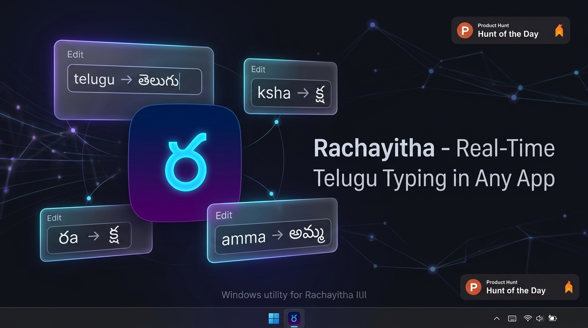
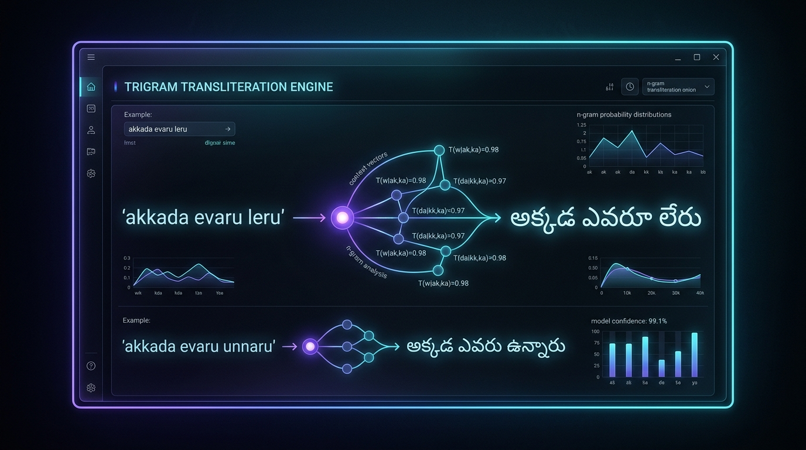
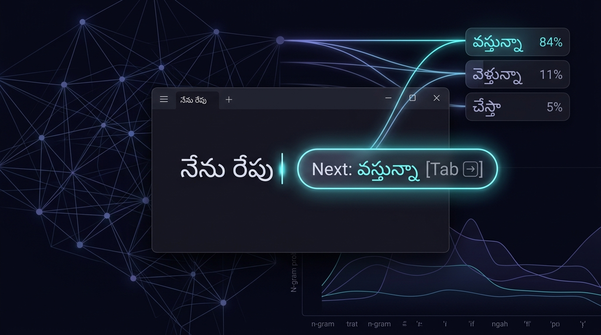
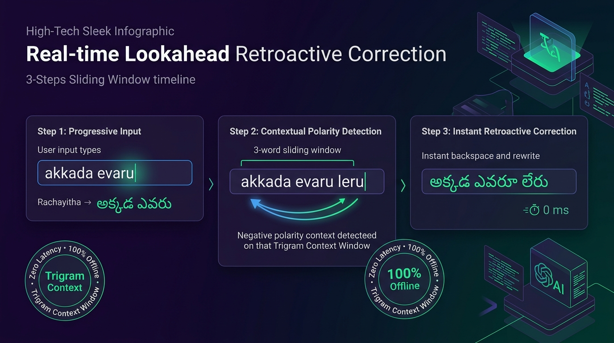

STEP 01
Download & Run Setup
Download Rachayitha_Setup.exe and complete the 10-second installation. Desktop and Start Menu shortcuts are created automatically with zero bloatware.
1-Click Windows Setup
No cumbersome InScript layouts. No web dependencies. Press Alt+T anywhere—WhatsApp, Word, Chrome, Notepad—type in Tenglish and watch it transform into authentic తెలుగు in real-time.

Works seamlessly across all your favorite desktop applications
Type naturally in lowercase Tenglish without touching the Shift key. Rachayitha's native Windows engine combines a 58,421-word lexicon with morphological Telugu Sandhi to deliver true 0ms transliteration across every desktop app.
Type repu, chala, bagundi, unnaru in effortless lowercase without pressing Shift or memorizing case rules.
Comprehensive conversational lexicon ranked by te_top10k frequency. Direct instant lookup with sub-millisecond local speed.
Decomposes 17 noun postpositions (-to, -lo, -nundi) and 25+ verb conjugations like aadukuntunnaru → ఆడుకుంటున్నారు.
Toggle with Alt+T anywhere. Works seamlessly across WhatsApp, Microsoft Word, Chrome, Excel, Notepad, and Discord.
No complicated configuration or keyboard layout swapping. Set it up once and write Telugu everywhere effortlessly.
Download Rachayitha_Setup.exe and complete the 10-second installation. Desktop and Start Menu shortcuts are created automatically with zero bloatware.
Press Alt+T on your keyboard in any application. Your taskbar tray icon dynamically glows with తె to indicate active Telugu typing mode.
Type phonetic words like namaskaaram, telugulO, or amma. Authentic Telugu characters (నమస్కారం, తెలుగులో, అమ్మ) appear instantly on your screen.
Designed as a low-level native Windows utility, not an electron web wrapper. High-performance, memory-efficient, and deeply respectful of user privacy.
Trained on 34.7M IndicCorp Telugu tokens. Automatically resolves semantic polarity (e.g. akkada evaru leru → అక్కడ ఎవరూ లేరు vs akkada evaru unnaru → అక్కడ ఎవరు ఉన్నారు) without manual shift keys.
A floating acrylic ghost pill tracks your cursor across Word, Chrome, and WhatsApp. Press [Tab ⇥] to autocomplete the top prediction instantly in 0ms with zero network lag.
Maintains a continuous 3-word sliding window. If subsequent words disambiguate a prior candidate, the engine issues seamless backspaces and rewrites the sentence in 0ms without UI flicker.
Retroactive CorrectionWrite naturally in colloquial lowercase Tenglish (sayantram, veltanu, matlade, sarele). Automatically resolves Sandhi declensions and handles standard typos.
Learns your personal typing style without manual setup. When you backspace an unwanted word and retype your desired Telugu spelling, Rachayitha permanently remembers your preference in 100% offline local storage.
Backspace-Retype Loop LearningSingle keys create authentic half-letters (n → న్), followed by vowels for full consonants (na → న). Naturally handles double letters (nna → న్న) and complex conjuncts (ksha → క్ష).
A dynamic taskbar icon renders తె in indigo when Telugu mode is active, and EN in slate when English mode is active. Always know your active language at a glance.
Visual Status IndicatorZero cloud APIs, zero telemetry, and zero network calls. All phonetic transliteration happens strictly inside your local RAM. What you write never leaves your personal machine.
Air-Gapped PrivacyToggle between Telugu and English effortlessly using Alt+T, Scroll Lock, or record your own preferred key combination with conflict-aware live re-registration.
Single-click the tray icon to open the complete reference matrix of Achulu (అచ్చులు), Hallulu (హల్లులు), Guninthalu, and Vatthulu with instant live search and test typing.
Integrated Cheat SheetA self-contained installer (Rachayitha_Setup.exe) bundles all dependencies with an interactive feature presentation and registers cleanly in Windows Installed Apps for 1-click uninstallation.
Tailored for authors, journalists, students, government offices, and social creators across Andhra Pradesh, Telangana, and the global diaspora.
Type breaking news articles, press releases, and editorial copy directly into Word, InDesign, or WordPress CMS with high typing velocity.
Compose novels, poetry, and research papers with authentic Telugu typography, full guninthalu, and rare classical conjuncts.
Prepare government circulars, legal petitions, billing sheets, and certificates in Telugu without memorizing cryptic InScript layouts.
Chat with family and friends in authentic Telugu on WhatsApp Desktop, Facebook, YouTube comments, and Discord with ease.
Experience next-generation NLP transliteration with zero cloud latency and complete air-gapped privacy.




Search through vowels, consonants, and complex conjuncts. Click any letter card to instantly test it in the live playground above.
How Rachayitha compares against legacy and cloud-based typing solutions.
| Feature Capability | Rachayitha (రచయిత) | PramukhIME | Lekhini.org | Google Input Tools |
|---|---|---|---|---|
| System-Wide Direct Typing (Any App) | ✓ Native Hook (0ms) | ✓ Supported | ✗ Web Box Only | ✓ Cloud IME |
Natural Halant-First Logic (n → న్, na → న) |
✓ Yes (Pollu-First) | ✗ Needs tilde/modifier | ✗ Conventional RTS | ✗ AI Guesswork |
| 100% Offline (Zero Network Requests) | ✓ Complete (Air-gapped) | ✓ Offline | ✗ Requires Browser | ✗ Cloud Dependent |
| Zero Telemetry & Keystroke Privacy | ✓ Zero Tracking | ✓ Local Only | ✗ Server Transliteration | ✗ Telemetry Logged |
| Dynamic Taskbar Tray Indicator (తె / EN) | ✓ Dynamic Badge | ✗ Static Icon | ✗ No Tray App | ✗ Generic Windows IME |
| Open Source & Fully Auditable | ✓ GNU AGPLv3 | ✗ Closed Source | ✗ Closed Web App | ✗ Proprietary |
Everything you need to know about typing in Telugu on Windows with Rachayitha.
Rachayitha (రచయిత) is a free, modern desktop typing software for Windows 10 and 11. It allows you to write authentic Telugu using your regular English keyboard (Tenglish). Unlike web tools where you must copy-paste, Rachayitha hooks directly into Windows so you can type directly into WhatsApp, Microsoft Word, Excel, Chrome, or any text editor.
Yes, 100%! Rachayitha has zero cloud API dependencies. All transliteration is computed locally inside your computer’s RAM with sub-millisecond response time. You can type on flights, remote areas, or confidential air-gapped workstations without needing an active internet connection.
Rachayitha is completely free and licensed under the GNU AGPLv3 open-source license. It collects zero telemetry, zero analytics, and logs zero keystrokes. Your personal chats, banking passwords, and confidential legal documents remain strictly private on your device.
Lekhini is restricted to a browser webpage where you must copy and paste. Google Input Tools requires internet, sends your keystrokes to Google servers, and often misinterprets Sanskrit and technical terms. Rachayitha is 100% offline, system-wide, deterministic, and uses a Halant-First engine for precise Telugu spelling.
The default global hotkey is Alt+T. Simply press Alt+T anytime to switch between Telugu and English typing. The system tray icon dynamically updates to show తె (Telugu active) or EN (English active). You can also change the shortcut to Scroll Lock or a custom key from the settings menu.
Just type the phonetic consonant sounds in sequence! For example:
• kka → క్క | nna → న్న | mma → మ్మ
• ksha → క్ష | pra → ప్ర | tra → త్ర
• sri / shri → శ్రీ | tva → త్వ | dya → ద్య
Rachayitha is officially compiled and tested for both Windows 10 and Windows 11 (64-bit). It integrates natively into the Windows system tray and desktop environment.
Yes. Rachayitha produces 100% compliant Unicode 15.0 Telugu text. Any text you write is immediately compatible with all modern fonts like Gautami, Noto Sans Telugu, Mandali, Ramaneeya, and renders properly across Android, iPhone, Mac, and the web.
Single-click setup installer with all dependencies included. Features our 34.7M Token Trigram Language Model, 58k+ Casual Lexicon, and desktop ghost pill next-word prediction.